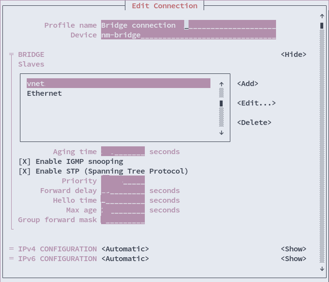
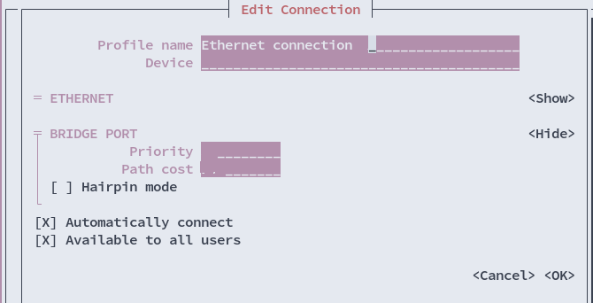
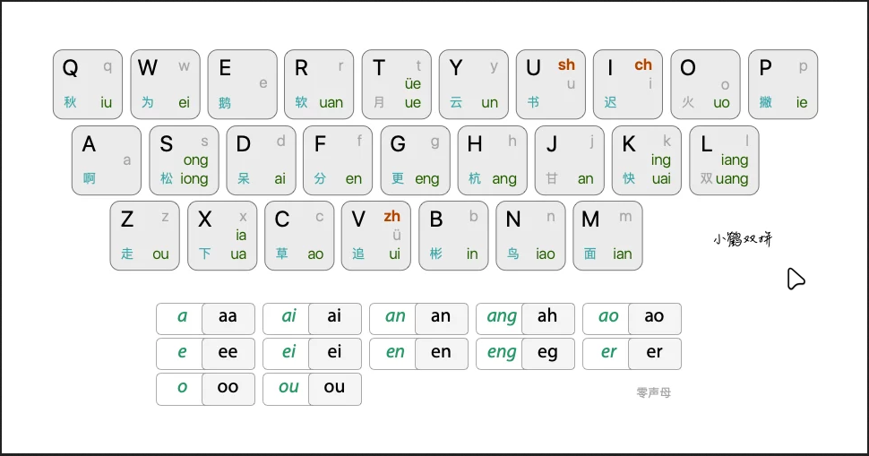

2022¶
What is Caddy?
At the most basic level, a web server like nginx or httpd. Like other web servers, caddy can serve content, or it can intercept web traffic to serve other sites (this is the core feature of a reverse proxy).at the most basic level, a web server like nginx or httpd. Like other web servers, caddy can serve content, or it can intercept web traffic to serve other sites (this is the core feature of a reverse proxy).
Unlike other web servers, caddy has some nice features that make it more palatable as a host:
- Automatic SSL, whether you want to generate your own certs or use ACME servers
- Very simple syntax for writing our configs. Most sites require a single directive.
- Based on go, a modern language with memory safety controls
- Sane defaults. By default caddy sets up sites securely and (usually) without any additional configuration
- A single, static binary. While our implementation will be docker focused, nothing is stopping you from installing caddy as a normal package or even as an executable on Windows.
Caddy config file
"Caddyfile" on which caddy calls the config for use. The syntac for more details for read up.
For inside, you can refer as offocial documentation
Example
ACME Portocol
How can we get a valid HTTPS certificate, signed by a certificate authority, so our site looks valid? Well we can do it the boring manual way, generating a Certificate Signing Request (CSR), having an authority sign that request, and returning a signed certificate. No thanks.
Instead, the good people at let’s encrypt developed the ACME protocol: a completely automated way to generate and provide signed certificates to sites like yours or mine. Let’s encrypt (and other services like zeroSSL) even provide a completely free service to do this for us!
The two most widely used options are the DNS and HTTP challenge methods.
DNS ACME Challenges

Pre-requisites:
- A Public DNS Domain, registered with a Domain Register. cloudflare is the recommendation.
- DNS provider to be available from the list of providers found in the dns.providers modules.
Setup with Docker service
- Create the docker-compose.yml in the folder named as caddy.
version: "3.9"
services:
caddy:
image: caddy:latest
container_name: caddy
hostname: caddy
restart: unless-stopped
security_opt:
- label:disable
ports:
- "80:80"
- "443:443"
- "443:443/udp"
volumes:
- ./container-config:/etc/caddy
- /etc/localtime:/etc/localtime:ro
- Bring it up with following way:
Vagrant Plugin
Background:
Due to the network in China is not good to go on plugin download and upgrade. Hence replace to local source is the better method.
Workaround:
- Rubygems
- Rubygems-China
- If the permission error message warning up, export ENV for tackle down.
Rubygems install the package
SublimE (Unlimited) for Linux User
- bash "sublime_text" is in /opt/sublime_text/sublime_text
- Go to https://hexed.it/
- Open and input "sublime_text"
- Search for "80 78 05 00 0F 94 C1"
- Change into "C6 40 05 01 48 85 C9"
- Do export
Tmux
🔗 Cheat Sheet & Quick Reference
Sessions
| Description | Command | Description | Command | |
|---|---|---|---|---|
| Start a new settion | tmux | Show all sessions | tmux ls | |
| tmux new | tmux list-sessions | |||
| tmux new-session | Attach to last session | tmux a | ||
| :new | tmux at | |||
| tmux attach | ||||
| tmux attach-session | ||||
| Start a new session with the name mysession | tmux new -s mysession | kill/delete session mysession | tmux kill-ses -t mysession | |
| :new -s mysession | tmux kill-session -t mysession | |||
| Attach to a session with the name mysession | tmux a -t mysession | kill/delete all session but mysession | tmux kill-session -a -t mysession | |
| tmux at -t mysession | kill/delete all session but the current | tmux kill-session -a | ||
| tmux attach -t myssesion | ||||
| tmux attach-session -t mysession | ||||
| Rename session | Ctrl + b $ | Session and Window Preview | Ctrl + b w | |
| Detach from session | Ctrl + b d | Move to previous session | Ctrl + b ( | |
| Detach others on the session (Maximize window by detch other clients) | :attac -d | Move to next session | Ctrl + b ) |
Windows
| Description | Command | Description | Command |
|---|---|---|---|
| Start a new session with the name mysession | tmux new -s mysession -n mywindow | Next window | Ctrl + b n |
| Create window | Ctrl + b c | Switc/select window by number | Ctrl + b 0...9 |
| Rename current window | Ctrl + b , | Toggle last active window | Ctrl + b l |
| Close current window | Ctrl + b & | Reorder windows, swap window number 2(src) and 1(dst) | :swap-window -s 2 -t 1 |
| List windows | Ctrl + b w | Move current window to the left by one position | :swap-window -t -1 |
| Previous window | Ctrl + b p |
Panes
| Description | Command | Description | Command |
|---|---|---|---|
| Toggle last active pane | Ctrl + b ; | Show pane numbers | Ctrl + b q |
| Split pane with horizontal layout | Ctrl + b % | Switch/select pane by number | Ctrl + b q 0..9 |
| Split pane with vertical layout | Ctrl + b " | Toggle pane zoom | Ctrl + b z |
| Move te current pane left | Ctrl + b { | Convert pane into a window | Ctrl + b ! |
| Move the current pane right | Ctrl + b } | Resize current pane height(holding second key is optional) | Ctrl +b KEY |
| Ctrl + b Ctrl + KEY | |||
| Switch to pane to the direction | Ctrl + b KEY | Resize current pane width(holding scond key is optional) | Ctrl + b KEY |
| Ctrl + b Ctrl + KEY | |||
| Toggle synchronize-panes(send command to all panes) | :setw synchronize-panes | Close curent pane | Ctrl + b X |
| Switch to next pane | Ctrl + b o |
Copy Mode
| Description | Command | Description | Command |
|---|---|---|---|
| use vi keys in buffer | :setw -g mode-keys vi | Search forward | / |
| Enter copy mode | Ctrl +b [ | Search backward | ? |
| Enter copy mode and scroll one page up | Ctrl + b PgUp | Next keyword occurance | n |
| Quit mode | q | Previous keyword occurance | N |
| Go to top line | g | Start selection | Spacebar |
| Go to bottom line | G | Clear selection | ESC |
| Scroll up | KEY | Copy selection | Enter |
| Scroll down | KEY | Paste contents of buffer_0i | Ctrl + b ] |
| Move cursor left | h | disaplay buffer_0 contents | :show-buffer |
| Move cursor down | j | copy entire visible contents of pane to a buffer | :capture-pane |
| Move cursor up | k | Show all buffers | :list-buffers |
| Move cursor right | l | Show all buffers and paste selected | :choose-buffer |
| Move cursor forward one word at a time | w | Save buffer contents to buf.txt | :save-buffer buf.txt |
| Move cursor backward one word at a time | b | delete buffer_1 | :delete-buffer -b 1/span> |
Misc
| Description | Command | Description | Command |
|---|---|---|---|
| Enter command mode | Ctrl + b : | Set OPTION for all windows | :setw -g OPTION |
| Set OPTION for all sessions | :set -g OPTION | Enable mouse mode | :set mouse on |
Help
| Description | Command | Description | Command |
|---|---|---|---|
| tmux list-keys | Show every session, window, pane, etc... | tmux info | |
| List key bindings(shortcuts) | Ctrl + b ? |
Groff & MOM
Groff
GNU troff (or groff) is a system for typesetting documents. troff is very flexible and has been used extensively for some thirty years. It is well entrenched in the Unix community.
MOM
A flexible typesetting and document formatting package that allows you to create high-quality Portable Document Format (.pdf) or PostScript (.ps) files for viewing and printing.) - mom is a flexible typesetting and document formatting package that allows you to create high-quality Portable Document Format (.pdf) or PostScript (.ps) files for viewing and printing.
KVM Bridge
Linux
Use nmtui command to config the Bridge adapter on-premise.
Click "Edit a connection" option to start walking through.

Open the page once click "Add" button for "Bridge" creation


Tips
Leave the empty on the slave device for communication automatically by adapter and router.
Delete the default wired connection and waiting a while. New Bridge connection will be activated soon later.
Transparent Gnome Shell
To use opacity/transparency occasionally - it is better use xprop command.
0x7FFFFFFF- 50% opacity0xFFFFFFFF- 100% opacity
One tiny shell script for reference:
#!/bin/bash
read -p "Set transparency percentage ? [Enter for 100%]" mydectrans
# only accept 10 to 99, rest is considered 100
[[ "$mydectrans" != [1-9][0-9] ]] && mydectrans=100
# Convert decimal to 32bit hex representation
my32bhextrans=$(printf 0x%x $((0xffffffff * $((mydectrans)) / 100)))
# Execute the action
xprop -f _NET_WM_WINDOW_OPACITY 32c -set _NET_WM_WINDOW_OPACITY $my32bhextrans
Terraform works on KVM for IaaS
Terraform is an open-source infrastructure as code software tool that provides a consistent CLI workflow to manage hundreds of cloud services. Terraform codifies cloud APIs into declarative configuration files.
Summary
PopOS
libvirt_domain.domain: Error creating libvirt domain: virError(Code=1, Domain=10, Message='internal error: process exited while connecting to monitor: 2019-01-28T02:29:14.861688Z qemu-system-x86_64: -drive file=/var/lib/libvirt/images/volume-0,format=qcow2,if=none,id=drive-virtio-disk0: Could not open '/var/lib/libvirt/images/volume-0': Permission denied')
{++The reason on the problem++}:
{++On Ubuntu/Debian distros SELinux is enforced by qemu even if it is disabled globally, this might cause unexpected++}
iBus
IBus (Intelligent Input Bus) is an input method framework, a type of application that allows for easily switching between different keyboard layouts. When combined with an input method editor, it also allows for typing non-Latin characters using a keyboard that does not natively support them.

Installation
Rime
Create the file of "default.custom.yaml" in the $HOME/.config/ibus/rime.
# default.custom.yaml
# save it to:
# ~/.config/ibus/rime (linux)
# ~/Library/Rime (macos)
# %APPDATA%\Rime (windows)
patch:
schema_list:
- schema: luna_pinyin # 朙月拼音
- schema: luna_pinyin_simp # 朙月拼音 简化字模式
- schema: double_pinyin_flypy # 小鶴雙拼
- schema: emoji # emoji 表情
Wizard Configuration
AutoStart
To launch IBus on user login, create an autostart entry with the following method: